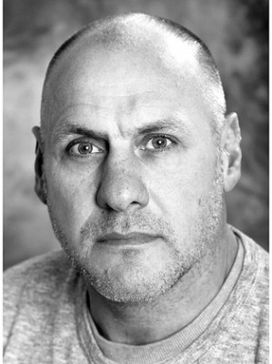
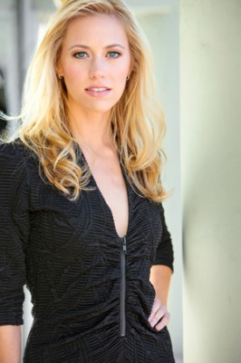

#4234 Im Himmel trägt man hohe Schuhe
Alternativ: Miss You Already

 IMDB-Wertung: 6.7 / 10
IMDB-Wertung: 6.7 / 10  Metascore: 0
Metascore: 0 
Jess und Milly sind seit ihrer Kindheit beste Freundinnen, obwohl sie unterschiedlicher nicht sein könnten. Milly spaziert auf High Heels erfolgreich durchs Leben und hat alles erreicht, wovon sie geträumt hat: eine steile Karriere, einen liebevollen Mann und zwei großartige Kinder. Jess ist mehr der einfühlsame und bodenständige Typ und wünscht sich nichts sehnlicher, als ein gemeinsames Baby mit ihrem Freund. Als Milly erfährt, dass sie an Brustkrebs erkrankt ist und Jess plötzlich schwanger wird, brauchen sich die Freundinnen mehr als je zuvor.
Jahr: 2015
Dauer: 112 Minuten
FSK: 6
Land: England Studio: EuroVideoTonspuren: DTS - ,
Untertitel: Deutsch,
Auflösung: 1080p (1920x808) Größe: 7424 MB
Genre: Komödie, Drama, Liebe
Regisseur: Catherine Hardwicke
Drehbuch: Anne Rapp
Soundtrack:
Darsteller:
 Drew Barrymore als Jess
Drew Barrymore als Jess Toni Collette als Milly
Toni Collette als Milly- Paddy Considine als Jago
- Tyson Ritter als Ace
 Mem Ferda als Achmed
Mem Ferda als Achmed Jacqueline Bisset als Miranda
Jacqueline Bisset als Miranda Charlotte Hope als Teenage Jess
Charlotte Hope als Teenage Jess- Sophie Holland als Teenage Milly
- Max Rinehart als Teenage Kit
 Dominic Cooper als Kit
Dominic Cooper als Kit- Grace Schneider als Jess, 10 yrs
- Honor Kneafsey als Scarlett
- Eleanor Stagg als Milly, 10 yrs
- Ryan Baker als Ben
- Emily Trappen als Jess, 13 yrs
 Silas Carson als Dr. Butala
Silas Carson als Dr. Butala- Lucy Morton als Milly, 13 yrs
- Seth Maxwell als Seth Maxwell
- Anjli Mohindra als Kira
 Ben Moor als Nurse Sam
Ben Moor als Nurse Sam Noah Huntley als Company Exec
Noah Huntley als Company Exec Frances de la Tour als Jill the Wigmaker
Frances de la Tour als Jill the Wigmaker- Shola Adewusi als Midwife
- Jamie Holt als Milly's Cousin
 Eileen Davies als Ace's Nan
Eileen Davies als Ace's Nan- Waleed Akhtar als Porter
- Donovan Blackwood als Roughneck
-  Kevin Fyfe als Roughneck
 Amy Clare Beales als Chemotherapy Visitor , uncredited
Amy Clare Beales als Chemotherapy Visitor , uncredited- Joanna Bobin als (uncredited
- Ian Brown als Ron , uncredited
- Vera Chok als Chang Zhe Tzung , uncredited
 Alex Gillison als Roadie , uncredited
Alex Gillison als Roadie , uncredited Minouche Kaftel als Woman in Hospital , uncredited
Minouche Kaftel als Woman in Hospital , uncredited- Shaz Lancaster als Roadie , uncredited
 Kumud Pant als Staff at Charity Gala , uncredited
Kumud Pant als Staff at Charity Gala , uncredited-  Charlotte Ubben als Cheryl , uncredited
 Anick Wiget als Chemotherapy Patient , uncredited
Anick Wiget als Chemotherapy Patient , uncredited- Lukas Rolfe als Little Lord
- Fjokra als Lead Singer
- Sophie Brown als Scarlett, 3 yrs
- Lucinda Raikes als Teacher
- Janice Acquah als Nisha
- Colin Giles als Milly's Cousin
- Tony Denham als Taxi Driver
- Seb Piper als Jess & Jago's Baby
- Hannah Blamires als Restaurant Customer , uncredited
 Pamela Betsy Cooper als Picnicer , uncredited
Pamela Betsy Cooper als Picnicer , uncredited- Chris Cowlin als Restaurant Customer , uncredited
- Guna Gultniece als Clubber , uncredited
Datei: X:\2015(G-M)\Im Himmel trägt man hohe Schuhe (2015, FSK6, 1920x808).mkv seit 26.08.2016
Festplatte: HD 2015(A-Z)
 Es gibt insgesamt 129 Filme in der Gruppe '2015(G-M)'
Es gibt insgesamt 129 Filme in der Gruppe '2015(G-M)'